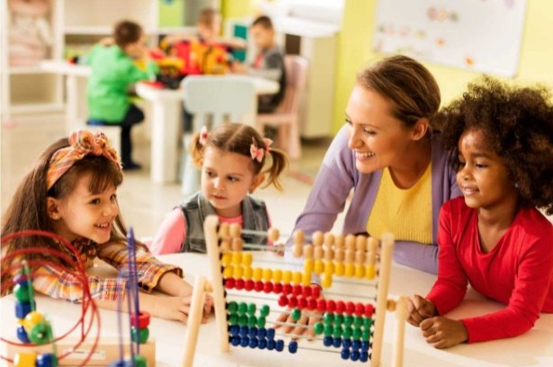
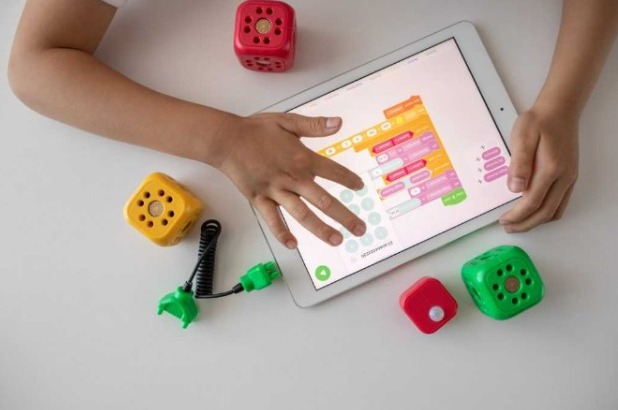
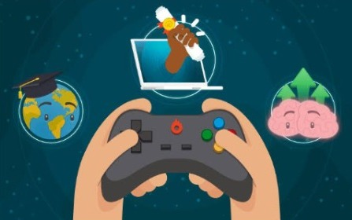

Info
rmando
Info
rmando


A evolução dos jogos Com o aparecimento dos jogos no século XVI, nas primeiras civilizações, por meio de pesquisas foi descoberto que a Roma antiga e a Grécia utilizavam jogos para o desenvolvimento da educação, aprimoramento da aprendizagem e ensino. Os jogos são uma constante na história das civilizações, algo que sempre esteve unido à cultura de povos, ao sagrado, à arte, à literatura, às guerras, aos costumes. Existem vários resquícios de pinturas rupestres e marcas arqueológicas, de que já existiram jogos Romanos e Gregos, que os mesmo jogavam, como exemplo o pião contemporâneo. Bonecas foram encontradas em túmulos de crianças no século IX a.c, assim como brinquedos infantis que foram encontrados em antigas construções Incas no Peru. (obs: listas que eu tinha te falado, tenta mudar ai man…) Adolescentes gregos distraíam-se lançando uma bola cheia de ar na parede, construída de bexiga de animais, coberta por uma capa de couro. O moderno “cabo de guerra” já era conhecido e utilizado pelos adolescentes de Atenas, o jogo de pique pega conhecido como “pegador”, é uma forma de jogo que está presente nas diversas culturas (LOPES, 2006). Acontece a mesma coisa com as cantigas de roda, indícios da era do Círculo Mágico, quando povos precedentes festejavam acontecimentos importantes formando círculos. (citação) Kishimoto (1993), afirma que os jogos foram transmitidos de pais para filhos: “A tradicionalidade e universalidade dos jogos assenta-se no fato de que povos distintos e antigos como os da Grécia Oriente brincavam de amarelinha, de empinar papagaios, jogar pedrinhas e até hoje as crianças o fazem quase da mesma forma.
Esses jogos foram transmitidos de geração em geração por meio de conhecimentos empíricos e permanecem na memória infantil”. Também, figuras filosóficas como Platão(427 - 347 a.c) e Aristóteles(385 - 322) defendiam o potencial presente no uso de jogos, que instruem e também divertem, no processo de formação da criança. Somente muito tempo depois no século 18, os jogos didáticos passam a fazer parte no auxílio do ensino efetivamente. com seu uso sendo restrito a somente a educação de príncipes e nobres da realeza. somente após o renascimento (Revolução francesa), que os jogos foram liberados e passou a fazer parte da vida das crianças, jovens, adultos e até idosos, sendo usados como meio de passatempo, e também um instrumento de apropriação de conhecimento, coordenação regras, ensino, disciplina etc.
Nossa sociedade possui uma grande diversidade de formas e meios de comunicação, e para se destacar, é importante que o indivíduo tenha a competência da leitura e da compreensão de diferentes linguagens. Expressões corporais e verbais são bem consideradas em nosso convívio social. Contudo, nas atividades escolares, é comum que as crianças se concentrem somente no aprendizado sobre a leitura e a escrita.
Um dos maiores desafios do dia a dia do professor é transformar o aprendizado em uma tarefa lúdica, especialmente no caso das crianças pequenas. Para isso, não é preciso apenas muita criatividade e jogo de cintura para lidar com o pique dos pequenos, mas também instrumentos que atendam as necessidades pedagógicas… benefícios dos jogos pedagógicos
Jogos educativos: benefícios e exemplos para o seu filho(a)É perceptível que muita coisa mudou em nossa sociedade após a inicialização da Revolução Digital, também chamada de Terceira Revolução Industrial. O modo como nos relacionamos se modificou de tamanha forma que, graças ao advento da tecnologia, as relações sociais passaram a ser desempenhadas de forma mais flexível. Sob essa mesma perspectiva, a educação também foi outra área que registrou grandes avanços em seus resultados após introduzir os jogos educativos em sua metodologia.
A razão clara dessa associação possui explicação devido a presença de uma sociedade atual com características cada vez mais imediatista, criativa e digital, o que… Jogos educativos como importante ferramenta para o melhorar o ensino e aprendizado
Como dito de forma prévia anteriormente, manter a atenção de crianças e jovens para o aprendizado na sala de aula, por exemplo, tem se tornado um dos principais desafios do ensino na atualidade. Assim, professores e diretores de escolas de ensino têm se desdobrado cada vez mais para modificar o sistema de ensino ultrapassado em que o professor se coloca à frente da turma para ministrar sua aula no quadro.
O desenvolvimento da criatividadeAo fornecer ao seu filho uma plataforma online de desenho, por exemplo, é possível fazer com que ele explore seu lado artístico por meio do uso de diversas formas geométricas e ferramentas disponíveis, e de desenvolver sua criatividade. Além disso, os jogos educativos que possuem ambientes, animais ou que sejam de montar peças, são muito importantes para desenvolver a imaginação dos pequeninos. Melhora da coordenação motora
A maioria dos jogos educativos conseguem manter uma boa relação entre proporcionar exercício para o corpo e para a mente, e promover a diversão da garotada. Além disso, outro ponto benéfico do uso desses games é aperfeiçoar os movimentos e, consequentemente, a coordenação motora da criança. Isso se dá através de combinar movimentos dos olhos com as mãos, além de estimular seu filho a manipular pequenas peças e objetos de forma leve.
Os jogos educativos estimulam seu filho a aprender com os erros. Outro fator importante é o aprendizado que pode ser obtido com cada erro cometido ao longo dos jogos, o que permite que a criança crie alternativas diferentes para tentar progredir em cada fase do jogo. Um exemplo claro disso é quando seu filho, em algum jogo, comete algum erro e, por não conseguir passar para a próxima etapa, ele acaba tendo que voltar para etapa inicial. Assim, como o plano anterior não deu certo, o jogo o encarregará que seu filho desenvolva e analise outro plano, caso queira passar para o próximo passo do jogo
Quando o assunto são jogos pedagógicos e até mesmo outro tipo de jogos é inegavelmente vemos que houve uma evolução tremenda tanto na forma como eles te fazem raciocinar e também como na forma de mexer com suas emoções,exatamente como você leu anteriormente, quando nós focamos em algum jogo e o resultado não é como esperávamos podemos nos sentir meio tristes ou frustrados porém quando nós ganhamos ficamos felizes
De acordo com o site:O fator emocional no desenvolvimento de jogos há um trecho que diz o seguinte “Segundo Brancher [2009] os jogadores querem sentir emoção ao jogar, eles esperam adrenalina, tensão, suspense, medo, alegria, etc” a partir desta informação podemos concluir que os jogos são criados para fazer com que você se sinta emocionalmente ligado a eles,outro site que pode exemplificar isto é:A influência dos games nas emoções ,neste site há uma parte que diz “Os cientistas convidaram 512 fãs de videogames para relembrar jogos que foram particularmente divertidos e outros bem marcantes. Em seguida, os participantes avaliaram as próprias percepções sobre cada jogo. Eles contaram que se divertiram muito em todos os games, mas tinham prazer maior em alguns títulos com narrativas e personagens. Revelaram que foram capazes de sentir culpa, tristeza ou felicidade por alguma decisão tomada dentro do jogo. Como em livros, uma peça de teatro, filme e música, os jogos de videogame interferem nas nossas emoções. “ Com bases nestas fontes podemos afirmar que um dos objetivos dos jogos é fazer com que você possa sentir emoções e assim se conectar com o jogo e ter uma experiência diferente
A influência dos jogos no aprendizado, ajuda no desenvolvimento do aluno sob as perspectivas criativa, afetiva, social e cultural. Jogando, a criança inventa, descobre, desenvolve habilidades e experimenta novos pontos de vista, desenvolvendo mais curiosidade e criatividade. Assim, ela vai trabalhando concentração, memória, atenção diante a situação e raciocínio lógico, para que desenvolva o controle mental de sua expressão motora.
A memória deve ser trabalhada e estimulada não só em sala de aula, e os jogos ajudariam nessa situação, valendo tanto para jogos convencionais quanto os eletrônicos.
Atualmente, o mercado já oferece opções de games dedicados ao aprendizado, permitindo um ele entre o abstrato e o concreto.
Antes de citar como os jogos são vistos atualmente, primeiro irei mostrar uma pesquisa feita por Maria Izabel dos Santos Tavares onde serão mostradas as respostas obtidas por 10 (dez) educadoras de um Centro de Educação Infantil de Nova Londrina.
Todas as dez educadoras possuem curso superior e especialização, com o curso de pós-graduação. Das dez educadoras que responderam ao questionário, cinco são formadas em pedagogia, três são formadas em letras e duas são formadas em matemática.
O tempo de atuação do magistério das educadoras varia sendo que, quatro educadores possuem menos de um ano, tendo sido contratadas recentemente, duas educadoras atuam a dez anos, três educadoras atuam a cerca de quinze anos e uma educadora atua no magistério a vinte e dois anos.
Quanto ao tempo de trabalho na modalidade de ensino, educação infantil, todas sempre atuaram nesta área, inclusive com concurso específico para a função.
As próximas questões são específicas quanto ao trabalho e à concepção do professor em relação à utilização de jogos em sua prática pedagógica.
As questões são abertas e as respostas serão apresentadas de forma individual, sendo que cada resposta será citada por uma sigla assim determinadas:
P.a (Professor a), e assim por diante P.b, P.c, P.d, P.e, P.f, P.g, P.h, P.i, P.j., respectivamente e estão apresentadas nas tabelas abaixo.
A questão 1 (um), tem o objetivo de verificar a definição dada pelas educadoras sobre os jogos pedagógicos. Diante disso, as respostas estão relacionadas na Tabela 1.
A partir das respostas obtidas dos pesquisadores, pode-se concluir que as educadoras têm bem definido o que são os jogos pedagógicos e que se trata de uma ferramenta didática muito importante que contribui para o desenvolvimento do seu aluno cujo objetivo é alcançar sua aprendizagem e seu desenvolvimento. Sabem da importância de se planejar aulas motivadoras, criativas e prazerosas, não deixando de trabalhar os conteúdos pré-estabelecidos relacionando-os com o desenvolvimento motor.
Vigotsky afirma “O jogo é considerado um estímulo à criança no desenvolvimento de processos internos de construção do conhecimento e no âmbito das relações com os outros”.
Conclui-se assim, que os jogos são capazes de motivar e levar o aluno a uma aprendizagem saudável, levando-os a participarem, a se arriscarem, a criarem, experimentando novos caminhos.
Desde o momento em se tem a imagem da criança que brinca, pode confirmar que o jogo e a criança andam juntos.